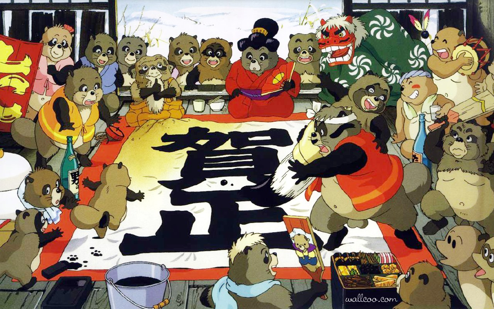

Verso la fine degli anni sessanta, in Giappone, l'eccessivo sviluppo urbano causato dal progetto Tama New Town sta portando a un disboscamento intensivo della collina di Tama, nei pressi di Tokyo, mettendo a rischio le terre dei tanuki. Nei primi anni novanta, all'inizio dell'era Heisei, i tanuki di tutte le colline di Tama, spronati dalla matriarca Oroku decidono di impegnarsi per fermare lo sviluppo urbano condotto dagli umani. Il consiglio patriarcale decide di studiare la natura degli umani e di insegnare ai giovani tanuki l'arte del trasformismo, un'arte magica perduta nel tempo che permette ai tanuki di cambiare il proprio aspetto, mentre a guidare la resistenza ci sono l'aggressivo Gonta, il vecchio Seizaemon, la saggia Oroku e il giovane Shoukichi. Il gruppo di tanuki quindi sfrutta le proprie capacità illusorie per sabotare i lavori degli umani, ferendo e addirittura causando la morte involontaria di alcuni di essi, e spingendo alcuni lavoratori spaventati ad abbandonare il lavoro. Solo alcuni tanuki, si domandano se quello che fanno possa davvero funzionare, e se le disgrazie che causano agli umani non siano eccessive. Tuttavia, il progetto urbanistico degli umani non si interrompe, e i disperati tanuki mandano dei messaggeri in spedizione per chiedere aiuto ai patriarchi di altre regioni. Uno dei messaggeri torna a Tama insieme a tre anziani tanuki della lontana isola di Shikoku, dove i tanuki ancora prosperano e vengono venerati dagli umani: Kincho IV, il pelato di Yashima e Inugami Gyobu. I tre patriarchi annunciano di volere organizzare una grande parata di spettri per le strade della città, per far credere agli umani che la città sia infestata dagli spiriti. Durante la parata, tuttavia, Gyobu muore a causa dello sforzo eccessivo, e il giorno successivo un ricco imprenditore rivendica pubblicamente la parata come una propria manifestazione pubblicitaria in favore del suo parco dei divertimenti, rendendo di fatto vani gli sforzi dei tanuki. In seguito al fallimento, i tanuki rimasti, in preda alla rabbia e allo sconforto, cominciano a dividersi in vari gruppi indipendenti. Gonta, alla guida del suo gruppo, decide di fronteggiare direttamente gli umani dandosi all'ecoterrorismo, rimane ucciso insieme agli altri tanuki in uno degli scontri. Un altro gruppo cerca di ottenere l'attenzione dei media per implorare la salvaguardia della collina. L'anziano pelato di Yashima, per la disfatta subita, perde la ragione, crea un culto buddhista insieme ai tanuki incapaci di trasformarsi, per poi imbarcarsi in una nave dorata insieme a loro per dirigersi verso la morte. Kincho IV, invece, dietro consiglio di una volpe trasformista, considera l'idea di prendere con sé un gruppo di tanuki e di andare a vivere insieme agli umani sotto mentite spoglie. Prima di questo però Kincho IV, si vendica dell'odioso direttore che si era preso il merito della parata degli spettri. Attirandolo con l'inganno in un ristorante magico lo deruba dei milioni di yen che voleva usare per assumere i tanuki nel parco. Compreso ormai che ogni sforzo di contrastare gli umani è inutile, Shoukichi e i tanuki rimasti uniscono le ultime forze per creare una grande illusione e mostrare agli umani l'aspetto che la collina aveva prima dell'inizio dello sviluppo urbanistico. Gli umani, colpiti, decidono finalmente di trasformare parte dei terreni rimasti in dei parchi dedicati alla convivenza con i tanuki, ma ormai è troppo tardi. Alla fine, i tanuki capaci di trasformarsi decidono di seguire l'esempio delle volpi e iniziano una nuova vita in città in mezzo agli umani. Gli altri tanuki, inadatti al trasformismo, cercano invece di sopravvivere nei parchi della città o spostandosi in altre regioni. Una notte, Shoukichi, ormai inserito nel mondo umano, segue un tanuki fuori dalla città e ritrova in un'area erbosa molti dei suoi amici. Shoukichi, colmo di gioia, si trasforma nuovamente in tanuki per unirsi al resto del gruppo e festeggiare al chiaro di luna.